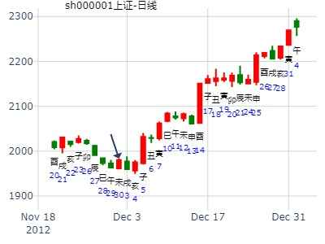
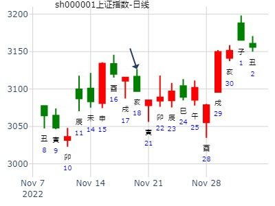

主帖标题: [原创]每日预测深沪两市大盘指数
公历时间：2008年1月9日9时30分 星期三
干支：丁亥年 癸丑月 戊申日 丁巳时 (旬空：寅卯)
坤宫：水天需（游魂） 坤宫：地天泰（六合）
六神 伏 神 【本 卦】 【变 卦】
朱雀 ▅▅ ▅▅ 妻财戊子水 ▅▅ ▅▅ 子孙癸酉金 应
青龙 ▅▅▅▅▅ 兄弟戊戌土 ○→ ▅▅ ▅▅ 妻财癸亥水
玄武 ▅▅ ▅▅ 子孙戊申金 世 ▅▅ ▅▅ 兄弟癸丑土
白虎 ▅▅▅▅▅ 兄弟甲辰土 ▅▅▅▅▅ 兄弟甲辰土 世
螣蛇 父母乙巳火 ▅▅▅▅▅ 官鬼甲寅木 ▅▅▅▅▅ 官鬼甲寅木
勾陈 ▅▅▅▅▅ 妻财甲子水 应 ▅▅▅▅▅ 妻财甲子水
需之泰，兄化财戌化亥。子孙暗动。
000063中兴通讯未来一个月走势。.md
公历起卦时间：2015年1月26日
干支：甲午年 丁丑月 壬寅日 丙午时 （日空：辰巳）
坤宫：水天需 (游魂) 坤宫：地天泰 (六合)
白虎 妻财戊子水 ▅▅ ▅▅ 子孙癸酉金 ▅▅ ▅▅ 应
腾蛇 兄弟戊戌土 ▅▅▅▅▅ ○→ 妻财癸亥水 ▅▅ ▅▅
勾陈 子孙戊申金 ▅▅ ▅▅ 世 兄弟癸丑土 ▅▅ ▅▅
朱雀 兄弟甲辰土 ▅▅▅▅▅ 兄弟甲辰土 ▅▅▅▅▅ 世
青龙 父母乙巳火 官鬼甲寅木 ▅▅▅▅▅ 官鬼甲寅木 ▅▅▅▅▅
玄武 妻财甲子水 ▅▅▅▅▅ 应 妻财甲子水 ▅▅▅▅▅
九五：需于酒食，贞吉。象曰：酒食贞吉，以中正也。
主帖标题: 明天600108的走势
出生年：年 性别：男 占事：信雅达今天走势
起卦方式：手动摇卦 www.iqing.net 线上排盘系统
公历时间：2007年3月2日8时30分 星期五
干支：丁亥年 壬寅月 乙未日 庚辰时 (旬空：辰巳)
坤宫：水天需（游魂） 坤宫：地天泰（六合）
六神 伏 神 【本 卦】 【变 卦】
玄武 ▅▅ ▅▅ 妻财戊子水 ▅▅ ▅▅ 子孙癸酉金 应
白虎 ▅▅▅▅▅ 兄弟戊戌土 ○→ ▅▅ ▅▅ 妻财癸亥水
螣蛇 ▅▅ ▅▅ 子孙戊申金 世 ▅▅ ▅▅ 兄弟癸丑土
勾陈 ▅▅▅▅▅ 兄弟甲辰土 ▅▅▅▅▅ 兄弟甲辰土 世
朱雀 父母乙巳火 ▅▅▅▅▅ 官鬼甲寅木 ▅▅▅▅▅ 官鬼甲寅木
青龙 ▅▅▅▅▅ 妻财甲子水 应 ▅▅▅▅▅ 妻财甲子水
取亥水为用,得月合日克,兄弟发动,有作空的动力,但它克不了亥水,小幅下振荡.
主帖标题: [原创]每日预测沪市大盘方向
公历时间：2009年3月3日9时30分 星期二
农历时间：己丑年二月初七巳时
干支：己丑年 丙寅月 丁未日 乙巳时 (旬空：寅卯)
神煞：驿马—巳 桃花—子 日禄—午 贵人—酉，亥
坤宫：水天需（游魂） 坤宫：地天泰（六合）
六神 伏 神 【本 卦】 【变 卦】
青龙 ▅▅ ▅▅ 妻财戊子水 ▅▅ ▅▅ 子孙癸酉金 应
玄武 ▅▅▅▅▅ 兄弟戊戌土 ○→ ▅▅ ▅▅ 妻财癸亥水
白虎 ▅▅ ▅▅ 子孙戊申金 世 ▅▅ ▅▅ 兄弟癸丑土
螣蛇 ▅▅▅▅▅ 兄弟甲辰土 ▅▅▅▅▅ 兄弟甲辰土 世
勾陈 父母乙巳火 ▅▅▅▅▅ 官鬼甲寅木 ▅▅▅▅▅ 官鬼甲寅木
朱雀 ▅▅▅▅▅ 妻财甲子水 应 ▅▅▅▅▅ 妻财甲子水
主帖标题: 预测3月21-25沪市大盘走势
公历时间：2011年 3月17日 13时2分 21-25沪市大盘走势
农历时间：辛卯年 二月十三日未时
干支： 辛卯年 辛卯月 辛未日 乙未时 (旬空：戌亥)
坤宫：水天需(游魂) 坤宫：地天泰(六合)
六神 伏 神 【本 卦】 【变 卦】
螣蛇 妻财戊子水 ━ ━ 子孙癸酉金 ━ ━ 应
勾陈 兄弟戊戌土 ━━━ ○→ 妻财癸亥水 ━ ━
朱雀 子孙戊申金 ━ ━ 世 兄弟癸丑土 ━ ━
青龙 兄弟甲辰土 ━━━ 兄弟甲辰土 ━━━ 世
玄武 父母乙巳火 官鬼甲寅木 ━━━ 官鬼甲寅木 ━━━
白虎 妻财甲子水 ━━━ 应 妻财甲子水 ━━━
主帖标题: 精诚铜业29日最高价，最低价是多少？
公历时间：2011年3月28日20时14分 农历时间：辛卯年 二月二十四日戌时
干支：辛卯年 辛卯月 壬午日 庚戌时
旬空：午未 午未 申酉 寅卯
神煞：驿马─申 桃花─卯 日禄─亥 贵人─巳，卯
坤宫：水天需（游魂） 坤宫：地天泰（六合）
六神 伏 神 【本 卦】 【变 卦】
白虎 ▄▄ ▄▄ 妻财戊子水 ▄▄ ▄▄ 子孙癸酉金 应
螣蛇 ▄▄▄▄▄ 兄弟戊戌土 O-> ▄▄ ▄▄ 妻财癸亥水
勾陈 ▄▄ ▄▄ 子孙戊申金 世 ▄▄ ▄▄ 兄弟癸丑土
朱雀 ▄▄▄▄▄ 兄弟甲辰土 ▄▄▄▄▄ 兄弟甲辰土 世
青龙 父母乙巳火 ▄▄▄▄▄ 官鬼甲寅木 ▄▄▄▄▄ 官鬼甲寅木
玄武 ▄▄▄▄▄ 妻财甲子水 应 ▄▄▄▄▄ 妻财甲子水
收盘价格：23.35
精诚铜业29日最高价，
最低价是多少？
主帖标题: 29日上证指数行情大家预测
公历时间：2011年3月28日20时27分 农历时间：辛卯年 二月二十四日戌时
干支：辛卯年 辛卯月 壬午日 庚戌时
旬空：午未 午未 申酉 寅卯
神煞：驿马─申 桃花─卯 日禄─亥 贵人─巳，卯
坤宫：水天需（游魂） 坤宫：地天泰（六合）
六神 伏 神 【本 卦】 【变 卦】
白虎 ▄▄ ▄▄ 妻财戊子水 ▄▄ ▄▄ 子孙癸酉金 应
螣蛇 ▄▄▄▄▄ 兄弟戊戌土 O-> ▄▄ ▄▄ 妻财癸亥水
勾陈 ▄▄ ▄▄ 子孙戊申金 世 ▄▄ ▄▄ 兄弟癸丑土
朱雀 ▄▄▄▄▄ 兄弟甲辰土 ▄▄▄▄▄ 兄弟甲辰土 世
青龙 父母乙巳火 ▄▄▄▄▄ 官鬼甲寅木 ▄▄▄▄▄ 官鬼甲寅木
玄武 ▄▄▄▄▄ 妻财甲子水 应 ▄▄▄▄▄ 妻财甲子水
《易经》第五卦 需 水天需 坎上乾下
需：有孚，光亨，贞吉。 利涉大川。彖曰：需，须也；险在前也。 刚健而不陷，其义不困穷矣。 需有孚，光亨，贞吉。 位乎天位，以正中也。 利涉大川，往有功也。象曰：云上於天，需；君子以饮食宴乐。
初九：需于郊。 利用恒，无咎。
象曰：需于郊，不犯难行也。 利用恒，无咎；未失常也。
九二：需于沙。 小有言，终吉。
象曰：需于沙，衍在中也。 虽小有言，以终吉也。
九三：需于泥，致寇至。
象曰：需于泥，灾在外也。 自我致寇，敬慎不败也。
六四：需于血，出自穴。
象曰：需于血，顺以听也。
九五：需于酒食，贞吉。
象曰：酒食贞吉，以中正也。
上六：入于穴，有不速之客三人来，敬之终吉。
象曰：不速之客来，敬之终吉。 虽不当位，未大失也。
上证指数支撑位在2955点位上下，压力位在3000点上下。
你认为呢？
主帖标题: T-Z-D-M上证指数擂台赛第九场第3局（2020年3月4日）T方
起卦公历：2020年3月3日15时50分(北京时间)
起卦农历：二○二○年 二月 初十日 申时。
干支： 庚子年 戊寅月 乙巳日 甲申时 (卦身：丑)午
主变卦 水天需(坤宫-游魂) 之 地天泰(坤宫) [空亡:寅、卯]
玄武 ━ ━ 妻财子水 ━ ━ 子孙酉金 应
白虎 ━━━○兄弟戌土 ━ ━ 妻财亥水
螣蛇 ━ ━ 子孙申金 世 ━ ━ 兄弟丑土
勾陈 ━━━ 兄弟辰土 ━━━ 兄弟辰土 世
朱雀 父巳 ━━━ 官鬼寅木 ━━━ 官鬼寅木
青龙 ━━━ 妻财子水 应 ━━━ 妻财子水
◇九五:需于酒食。贞：吉。 象曰：酒食贞吉，以中正也。
调整到位，涨。
主帖标题: 占事：恒邦股份卯月走势
男 占事：恒邦股份全部年内走势？
公历起卦时间：2020年3月18日22时38分 (手工指定)
干支：庚子年 己卯月 庚申日 丁亥时 （日空：子丑）
坤宫：水天需 (游魂) 坤宫：地天泰 (六合)
六神 伏神 本 卦 变 卦
螣蛇 妻财戊子水 ▅▅ ▅▅ 子孙癸酉金 ▅▅ ▅▅ 应
勾陈 兄弟戊戌土 ▅▅▅▅▅ ○→ 妻财癸亥水 ▅▅ ▅▅
朱雀 子孙戊申金 ▅▅ ▅▅ 世 兄弟癸丑土 ▅▅ ▅▅
青龙 兄弟甲辰土 ▅▅▅▅▅ 兄弟甲辰土 ▅▅▅▅▅ 世
玄武 父母乙巳火 官鬼甲寅木 ▅▅▅▅▅ 官鬼甲寅木 ▅▅▅▅▅
白虎 妻财甲子水 ▅▅▅▅▅ 应 妻财甲子水 ▅▅▅▅▅
主帖标题: 3.24 低点卦
公历起卦时间：2021年3月24日15时30分 (手工指定)
干支：辛丑年 辛卯月 辛未日 丙申时 （日空：戌亥）
坤宫：水天需 (游魂) 坤宫：地天泰 (六合)
六神 伏神 本 卦 变 卦
螣蛇 妻财戊子水 ▅▅ ▅▅ 子孙癸酉金 ▅▅ ▅▅ 应
勾陈 兄弟戊戌土 ▅▅▅▅▅ ○→ 妻财癸亥水 ▅▅ ▅▅
朱雀 子孙戊申金 ▅▅ ▅▅ 世 兄弟癸丑土 ▅▅ ▅▅
青龙 兄弟甲辰土 ▅▅▅▅▅ 兄弟甲辰土 ▅▅▅▅▅ 世
玄武 父母乙巳火 官鬼甲寅木 ▅▅▅▅▅ 官鬼甲寅木 ▅▅▅▅▅
白虎 妻财甲子水 ▅▅▅▅▅ 应 妻财甲子水 ▅▅▅▅▅
今日低点卦
今日低点不是低点，低点在戌日，也就是周六。
亥水空，多方未能组织有效抵抗。
明后天总体还是偏空。小跌。
同样，亥日大涨，可惜周日。
4.1日下午试测斯达半导何时涨停？出生：2020 年 性别：男 占事：没填
排卦：元亨利贞网六爻在线排盘系统 http://www.china95.net
公历起卦时间：2020年4月1日15时6分 (电脑自动)
干支：庚子年 己卯月 甲戌日 壬申时 （日空：申酉）
坤宫：水天需 (游魂) 坤宫：地天泰 (六合)
六神 伏神 本 卦 变 卦
玄武 妻财戊子水 ▅▅ ▅▅ 子孙癸酉金 ▅▅ ▅▅ 应
白虎 兄弟戊戌土 ▅▅▅▅▅ ○→ 妻财癸亥水 ▅▅ ▅▅
螣蛇 子孙戊申金 ▅▅ ▅▅ 世 兄弟癸丑土 ▅▅ ▅▅
勾陈 兄弟甲辰土 ▅▅▅▅▅ 兄弟甲辰土 ▅▅▅▅▅ 世
朱雀 父母乙巳火 官鬼甲寅木 ▅▅▅▅▅ 官鬼甲寅木 ▅▅▅▅▅
青龙 妻财甲子水 ▅▅▅▅▅ 应 妻财甲子水 ▅▅▅▅▅
主帖标题: 被市场打乱的短线卦例
缘起：因 601038一拖股份19年6月曾经妖过一回，最近农业板块火爆，考虑农机可能有表现，故测之
公历起卦时间：2020年4月23日20时44分 (按农历时间起卦)
干支：庚子年 庚辰月 丙申日 戊戌时 （日空：辰巳）
神煞：驿马－寅 桃花－酉 日禄－巳 贵人－酉，亥
坤宫：水天需 (游魂) 坤宫：地天泰 (六合)
六神 伏神 本 卦 变 卦
青龙 妻财戊子水 ▅▅ ▅▅ 子孙癸酉金 ▅▅ ▅▅ 应
玄武 兄弟戊戌土 ▅▅▅▅▅ ○→ 妻财癸亥水 ▅▅ ▅▅
白虎 子孙戊申金 ▅▅ ▅▅ 世 兄弟癸丑土 ▅▅ ▅▅
螣蛇 兄弟甲辰土 ▅▅▅▅▅ 兄弟甲辰土 ▅▅▅▅▅ 世
勾陈 父母乙巳火 官鬼甲寅木 ▅▅▅▅▅ 官鬼甲寅木 ▅▅▅▅▅
朱雀 妻财甲子水 ▅▅▅▅▅ 应 妻财甲子水 ▅▅▅▅▅
2024-04-02_中曼石油_需之泰_2024年卦
时间: 2024-04-02 13时31分
干支: 甲辰年丁卯月丙申日 (旬空: 辰巳 )
水天需(游魂) 地天泰
六神 伏神 本 卦 变 卦
青龙 ▅▅ ▅▅ 妻财子水 ▅▅ ▅▅ 子孙酉金 应
玄武 ▅▅▅▅▅ 兄弟戌土 Ｏ→ ▅▅ ▅▅ 妻财亥水
白虎 ▅▅ ▅▅ 子孙申金 世 ▅▅ ▅▅ 兄弟丑土
腾蛇 ▅▅▅▅▅ 兄弟辰土 ▅▅▅▅▅ 兄弟辰土 世
勾陈 父母巳火▅▅▅▅▅ 官鬼寅木 ▅▅▅▅▅ 官鬼寅木
朱雀 ▅▅▅▅▅ 妻财子水 应 ▅▅▅▅▅ 妻财子水
性别：女 占事: 明天 --水易缘
公历时间：2015年5月20日15时5分
干支：乙未年 辛巳月 丙申日 丙申时 丁酉21日走势
旬空：辰巳 申酉 辰巳 辰巳
神煞：驿马─寅 桃花─酉 日禄─巳 贵人─酉，亥
坤宫：水天需（游魂） 坤宫：地天泰（六合）
六神 伏 神 【本 卦】 【变 卦】
青龙 ▄▄ ▄▄ 妻财戊子水 ▄▄ ▄▄ 子孙癸酉金 应
玄武 ▄▄▄▄▄ 兄弟戊戌土 O-> ▄▄ ▄▄ 妻财癸亥水
白虎 ▄▄ ▄▄ 子孙戊申金 世 ▄▄ ▄▄ 兄弟癸丑土
螣蛇 ▄▄▄▄▄ 兄弟甲辰土 ▄▄▄▄▄ 兄弟甲辰土 世
勾陈 父母乙巳火 ▄▄▄▄▄ 官鬼甲寅木 ▄▄▄▄▄ 官鬼甲寅木
朱雀 ▄▄▄▄▄ 妻财甲子水 应 ▄▄▄▄▄ 妻财甲子水
出生年：年 性别：女 占事: 5.18-22大盘趋势
公历时间：2015年5月15日16时56分
干支：乙未年 辛巳月 辛卯日 丙申时
旬空：辰巳 申酉 午未 辰巳
巽宫：巽为风（六冲） 震宫：雷风恒
六神 【本 卦】 【变 卦】
螣蛇 ▄▄▄▄▄ 兄弟辛卯木 世O-> ▄▄ ▄▄ 妻财庚戌土 应
勾陈 ▄▄▄▄▄ 子孙辛巳火 O-> ▄▄ ▄▄ 官鬼庚申金
朱雀 ▄▄ ▄▄ 妻财辛未土 X-> ▄▄▄▄▄ 子孙庚午火
青龙 ▄▄▄▄▄ 官鬼辛酉金 应 ▄▄▄▄▄ 官鬼辛酉金 世
玄武 ▄▄▄▄▄ 父母辛亥水 ▄▄▄▄▄ 父母辛亥水
白虎 ▄▄ ▄▄ 妻财辛丑土 ▄▄ ▄▄ 妻财辛丑土
主帖标题: 六爻预测3日大盘行情
公历起卦时间：2011年6月3日9时30分 (手工指定)
干支：辛卯年 癸巳月 己丑日 己巳时 （日空：午未）
坤宫：水天需 (游魂) 坤宫：地天泰 (六合)
六神 伏神 本 卦 变 卦
勾陈 妻财戊子水 ▅▅ ▅▅ 子孙癸酉金 ▅▅ ▅▅ 应
朱雀 兄弟戊戌土 ▅▅▅▅▅ ○→ 妻财癸亥水 ▅▅ ▅▅
青龙 子孙戊申金 ▅▅ ▅▅ 世 兄弟癸丑土 ▅▅ ▅▅
玄武 兄弟甲辰土 ▅▅▅▅▅ 兄弟甲辰土 ▅▅▅▅▅ 世
白虎 父母乙巳火 官鬼甲寅木 ▅▅▅▅▅ 官鬼甲寅木 ▅▅▅▅▅
腾蛇 妻财甲子水 ▅▅▅▅▅ 应 妻财甲子水 ▅▅▅▅▅
主帖标题: 7.14上证收盘走势？
wxxs
求测人：某人，男，庚午(1990年)，自动起卦(起卦方式)
公历：2022年7月14日6时17分，星期四。
干支：壬寅年 丁未月 戊辰日 乙卯时 (旬空: 戌亥 )
水天需(游魂) 地天泰
六神 伏神 本 卦 变 卦
朱雀 ▅▅ ▅▅ 妻财子水 ▅▅ ▅▅ 子孙酉金 应
青龙 ▅▅▅▅▅ 兄弟戌土 Ｏ→ ▅▅ ▅▅ 妻财亥水
玄武 ▅▅ ▅▅ 子孙申金 世 ▅▅ ▅▅ 兄弟丑土
白虎 ▅▅▅▅▅ 兄弟辰土 ▅▅▅▅▅ 兄弟辰土 世
腾蛇 父母巳火▅▅▅▅▅ 官鬼寅木 ▅▅▅▅▅ 官鬼寅木
勾陈 ▅▅▅▅▅ 妻财子水 应 ▅▅▅▅▅ 妻财子水

求测人：某人，男，乙卯(1975年)，自动起卦(起卦方式)
占问事宜：002329皇氏集团明天涨跌
公历：2016年8月29日16时31分，星期一。
干支：丙申年 丙申月 癸未日 庚申时 (卦身：卯)
主变卦 水天需(坤宫-游魂) 之 地天泰(坤宫) [空亡:申、酉]
白虎 ▅▅ ▅▅ 妻财戊子水 ▅▅ ▅▅ 子孙癸酉金 应
螣蛇 ▅▅▅▅▅○兄弟戊戌土 ▅▅ ▅▅ 妻财癸亥水
勾陈 ▅▅ ▅▅ 子孙戊申金 世 ▅▅ ▅▅ 兄弟癸丑土
朱雀 ▅▅▅▅▅ 兄弟甲辰土 ▅▅▅▅▅ 兄弟甲辰土 世
青龙 父母乙巳火 ▅▅▅▅▅ 官鬼甲寅木 ▅▅▅▅▅ 官鬼甲寅木
玄武 ▅▅▅▅▅ 妻财甲子水 应 ▅▅▅▅▅ 妻财甲子水

主帖标题: 我的选择正确吗？有前途吗？
出生：1979 年 性别：男 占事：选择，未来
公历起卦时间：2015年10月4日3时8分 (按农历时间起卦)
干支：乙未年 乙酉月 癸丑日 甲寅时 （日空：寅卯）
坤宫：水天需 (游魂) 坤宫：地天泰 (六合)
六神 伏神 本 卦 变 卦
白虎 妻财戊子水 ▅▅ ▅▅ 子孙癸酉金 ▅▅ ▅▅ 应
腾蛇 兄弟戊戌土 ▅▅▅▅▅ ○→ 妻财癸亥水 ▅▅ ▅▅
勾陈 子孙戊申金 ▅▅ ▅▅ 世 兄弟癸丑土 ▅▅ ▅▅
朱雀 兄弟甲辰土 ▅▅▅▅▅ 兄弟甲辰土 ▅▅▅▅▅ 世
青龙 父母乙巳火 官鬼甲寅木 ▅▅▅▅▅ 官鬼甲寅木 ▅▅▅▅▅
玄武 妻财甲子水 ▅▅▅▅▅ 应 妻财甲子水 ▅▅▅▅▅
10月24日大盘。需之泰。兄弟五爻君位发动，当天值班，险在前。烟正。
起卦公历：2022年10月21日12时35分(北京时间)
起卦干支： 壬寅年 庚戌月 丁未日 丙午时 (卦身：子) 戌
主变卦 水天需(坤宫-游魂) 之 地天泰(坤宫) [空亡:寅、卯]
青龙 ━ ━ 妻财戊子水 ━ ━ 子孙癸酉金 应
玄武 ━━━ ○兄弟戊戌土 ━ ━ 妻财癸亥水
白虎 ━ ━ 子孙戊申金 世━ ━ 兄弟癸丑土
螣蛇 ━━━ 兄弟甲辰土 ━━━ 兄弟甲辰土 世
勾陈 父巳 ━━━ 官鬼甲寅木 ━━━ 官鬼甲寅木
朱雀 ━━━ 妻财甲子水 应 ━━━ 妻财甲子水
◇九五:需于酒食。贞：吉。 象曰：酒食贞吉，以中正也。
多方力不从心。

主帖标题: [原创]每日预测深沪两市大盘指数
公历时间：2007年11月12日9时30分 星期一
农历时间：丁亥年十月初三巳时
干支：丁亥年 辛亥月 庚戌日 辛巳时 (旬空：寅卯)
神煞：驿马—申 桃花—卯 日禄—申 贵人—寅，午
坤宫：水天需（游魂） 坤宫：地天泰（六合）
六神 伏 神 【本 卦】 【变 卦】
螣蛇 ▅▅ ▅▅ 妻财戊子水 ▅▅ ▅▅ 子孙癸酉金 应
勾陈 ▅▅▅▅▅ 兄弟戊戌土 ○→ ▅▅ ▅▅ 妻财癸亥水
朱雀 ▅▅ ▅▅ 子孙戊申金 世 ▅▅ ▅▅ 兄弟癸丑土
青龙 ▅▅▅▅▅ 兄弟甲辰土 ▅▅▅▅▅ 兄弟甲辰土 世
玄武 父母乙巳火 ▅▅▅▅▅ 官鬼甲寅木 ▅▅▅▅▅ 官鬼甲寅木
白虎 ▅▅▅▅▅ 妻财甲子水 应 ▅▅▅▅▅ 妻财甲子水

主帖标题: 子月A股，上证，趋...势 %
占事: 子月A股，上证，运 %
起卦方式：手动3骰子摇卦
公历时间：2012年11月30日
干支：壬辰年 辛亥月 乙未日 旬空：午未 寅卯 辰巳
坤宫：水天需（游魂） 坤宫：地天泰
六神 伏 神 【本 卦】 【变 卦】
玄武 ▄▄ ▄▄ 妻财戊子水 ▄▄ ▄▄ 子孙癸酉金 应
白虎 ▄▄▄▄▄ 兄弟戊戌土 O-> ▄▄ ▄▄ 妻财癸亥水
螣蛇 ▄▄ ▄▄ 子孙戊申金 世 ▄▄ ▄▄ 兄弟癸丑土
勾陈 ▄▄▄▄▄ 兄弟甲辰土 ▄▄▄▄▄ 兄弟甲辰土 世
朱雀 父母乙巳火 ▄▄▄▄▄ 官鬼甲寅木 ▄▄▄▄▄ 官鬼甲寅木
青龙 ▄▄▄▄▄ 妻财甲子水 应 ▄▄▄▄▄ 妻财甲子水

主帖标题: 占事: 000001 18--22 ☞☞☞
占事: 000001 18--22
起卦方式：手动摇卦 周易天地www.64gua.com六爻线上排盘系统
公历时间：2013年11月17日22时37分 农历时间：癸巳年 十月十五日亥时
干支：癸巳年 癸亥月 丁亥日 辛亥时
旬空：午未 子丑 午未 寅卯
神煞：驿马─巳 桃花─子 日禄─午 贵人─酉，亥
坤宫：水天需（游魂） 坤宫：地天泰（六合）
六神 伏 神 【本 卦】 【变 卦】
青龙 ▄▄ ▄▄ 妻财戊子水 ▄▄ ▄▄ 子孙癸酉金 应
玄武 ▄▄▄▄▄ 兄弟戊戌土 O-> ▄▄ ▄▄ 妻财癸亥水
白虎 ▄▄ ▄▄ 子孙戊申金 世 ▄▄ ▄▄ 兄弟癸丑土
螣蛇 ▄▄▄▄▄ 兄弟甲辰土 ▄▄▄▄▄ 兄弟甲辰土 世
勾陈 父母乙巳火 ▄▄▄▄▄ 官鬼甲寅木 ▄▄▄▄▄ 官鬼甲寅木
朱雀 ▄▄▄▄▄ 妻财甲子水 应 ▄▄▄▄▄ 妻财甲子水
天海投资。需之泰。.md
时间: 2015-11-14
干支: 乙未年丁亥月甲午日 (旬空: 辰巳 )
水天需(游魂) 地天泰
六神 伏神 本 卦 变 卦
玄武 ▅▅ ▅▅ 妻财子水 ▅▅ ▅▅ 子孙酉金 应
白虎 ▅▅▅▅▅ 兄弟戌土 Ｏ→ ▅▅ ▅▅ 妻财亥水
腾蛇 ▅▅ ▅▅ 子孙申金 世 ▅▅ ▅▅ 兄弟丑土
勾陈 ▅▅▅▅▅ 兄弟辰土 ▅▅▅▅▅ 兄弟辰土 世
朱雀 父母巳火▅▅▅▅▅ 官鬼寅木 ▅▅▅▅▅ 官鬼寅木
青龙 ▅▅▅▅▅ 妻财子水 应 ▅▅▅▅▅ 妻财子水
主帖标题: 11.21——还需调整
起卦公历：2022年11月18日15时10分(北京时间)
起卦农历：二○二二年 十月 廿五日 申时。
干支： 壬寅年 辛亥月 乙亥日 甲申时 (卦身：辰)
主变卦 水天需(坤宫-游魂) 之 地天泰(坤宫) [空亡:申、酉]
玄武 ━ ━ 妻财戊子水 ━ ━ 子孙癸酉金 应
白虎 ━━━ ○兄弟戊戌土 ━ ━ 妻财癸亥水
螣蛇 ━ ━ 子孙戊申金 世 ━ ━ 兄弟癸丑土
勾陈 ━━━ 兄弟甲辰土 ━━━ 兄弟甲辰土 世
朱雀 父巳 ━━━ 官鬼甲寅木 ━━━ 官鬼甲寅木
青龙 ━━━ 妻财甲子水 应 ━━━ 妻财甲子水
◇九五:需于酒食。贞：吉。 象曰：酒食贞吉，以中正也。
涨也不多。
